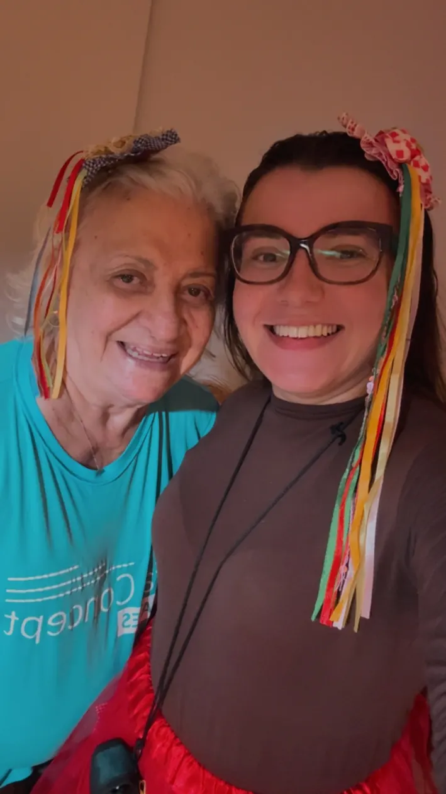
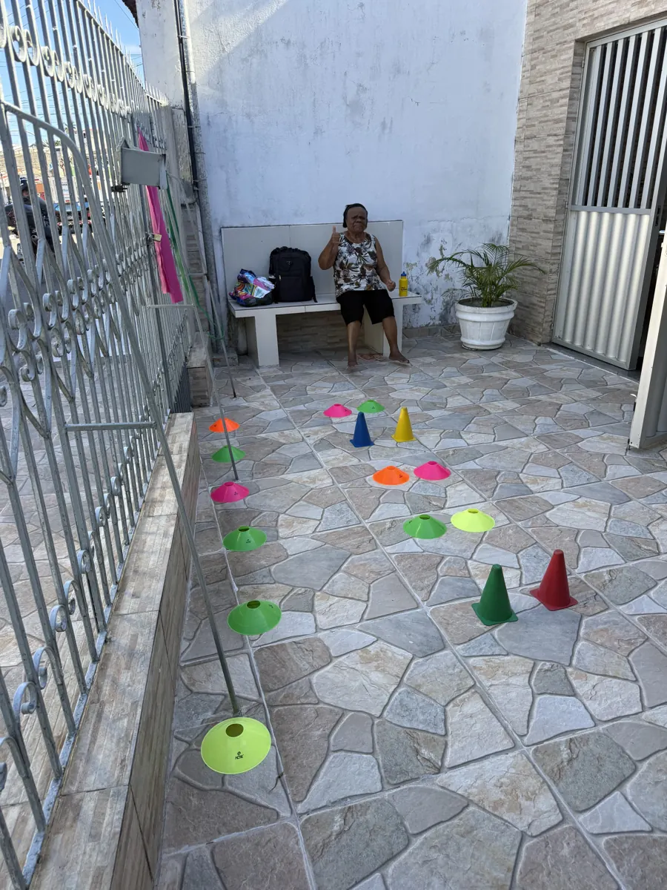
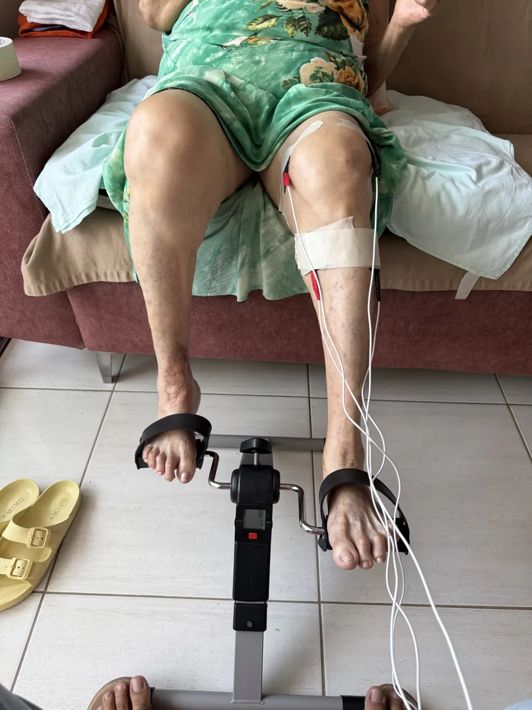
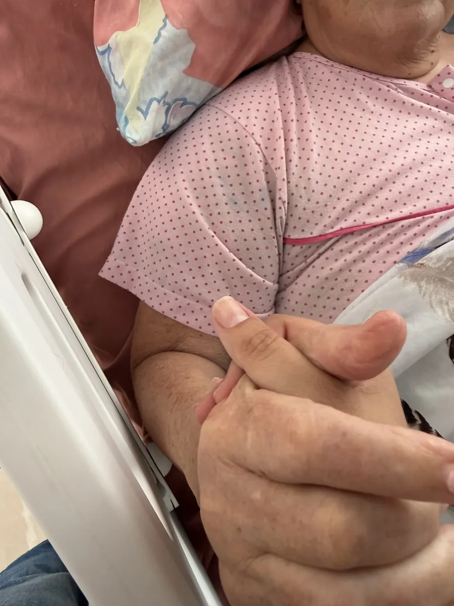
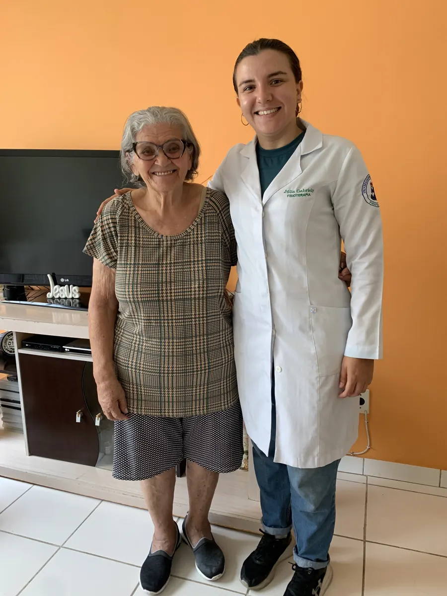
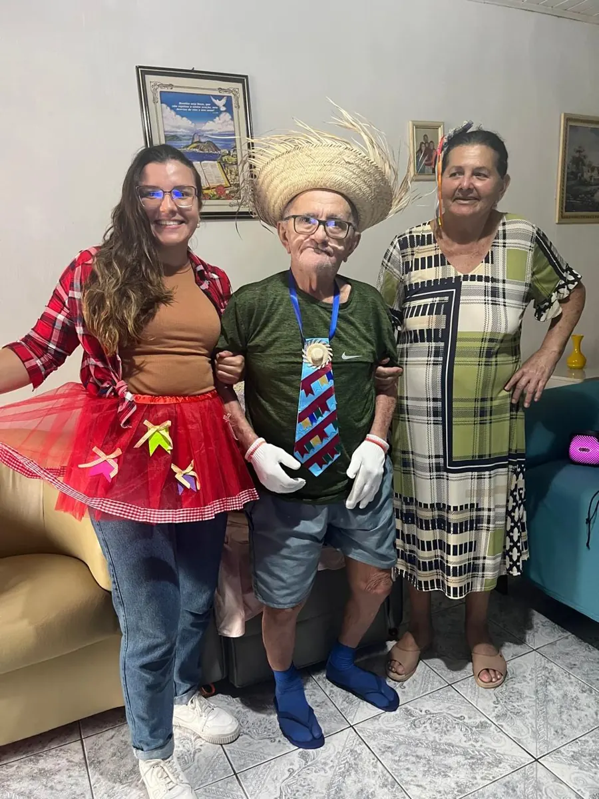
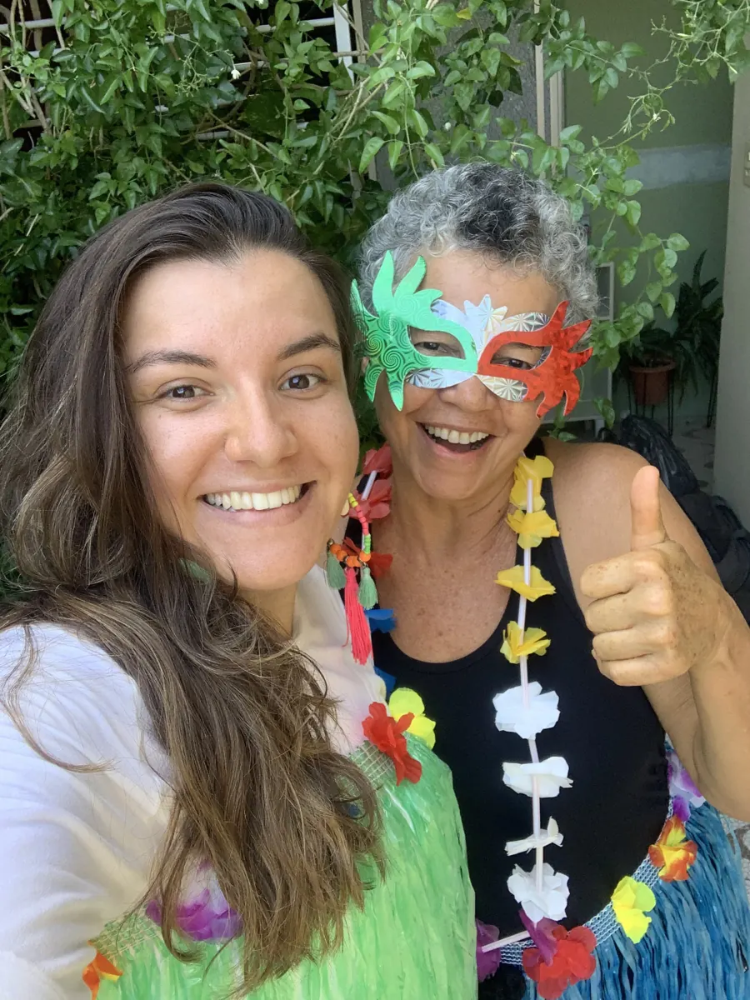
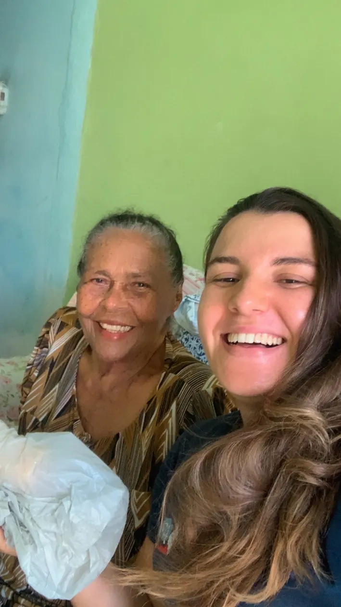

Fisioterapia para idosos
Foco no público idoso, com abordagem personalizada. A Dra. Júlia está em especialização em gerontologia e saúde do idoso.
Fisioterapia domiciliar · Aracaju
Atendimento domiciliar com foco no público idoso, por plano de saúde ou particular, com um plano pensado para as necessidades e a rotina de cada paciente.
rascunho
 Júlia GabrielyFisioterapeuta · CREFITO 408355-F
Júlia GabrielyFisioterapeuta · CREFITO 408355-F

Para quem é
Situações comuns no dia a dia de quem cuida de um pai, de uma mãe ou de si mesmo depois dos 60.
rascunho

Perdeu a confiança para andar sozinho pela casa ou já teve uma queda recente.

Levantar da cadeira, subir um degrau ou caminhar ficou mais difícil.

Uma dor que atrapalha o sono, o banho ou as tarefas de todo dia.

Depois de uma internação ou cirurgia, a recuperação continua no conforto de casa.
A fisioterapia não substitui o acompanhamento médico. Quando for preciso, a avaliação médica faz parte do cuidado.
Em números
Dados públicos, para dar contexto. Eles não dizem o que acontece com cada pessoa: cada caso começa pela avaliação.
Queda, dor e perda de mobilidade pedem avaliação. Quando for preciso, a avaliação médica faz parte do cuidado.
rascunho
Como funciona
Sem deslocamento, sem sala de espera. A fisioterapia vai até a casa, e a família acompanha cada etapa.
rascunho

Você conta o que está acontecendo e quem vai ser atendido. Já dá para saber se o atendimento é pelo plano ou particular.
A primeira visita é para conhecer o paciente, a rotina e o ambiente da casa. [PENDENTE: duração e o que a avaliação inclui]
Os objetivos são definidos junto com o paciente e a família, de acordo com as necessidades de cada um.
As sessões seguem o plano, com orientações para o dia a dia e para quem cuida. [PENDENTE: frequência e duração das sessões]
Cuidados
A indicação de cada recurso vem depois da avaliação. Quando for preciso, a avaliação médica faz parte do cuidado.
Foco no público idoso, com abordagem personalizada. A Dra. Júlia está em especialização em gerontologia e saúde do idoso.
Técnica manual sobre os músculos e as fáscias, usada no atendimento de pessoas com dor ou restrição de movimento.
rascunho
Também chamado de agulhamento a seco: agulhas finas, sem medicamento, aplicadas em pontos de tensão muscular.
rascunho
[PENDENTE: lista completa de serviços e condições atendidas — Mercado, perguntas 01, 03 e 08]
Cuidar também é celebrar
Festa junina, carnaval, um bom papo na sala. A rotina de cuidado tem escuta, vínculo e momentos de leveza, na casa de cada paciente.
rascunho
Quero conhecer o atendimento


No dia a dia
Momentos do atendimento em casa.
pendente
Cada paciente tem um plano próprio. As imagens ilustram a rotina de atendimento e não indicam resultado.
Quem cuida
“Ser fisioterapeuta é devolver autonomia e qualidade de vida. É acolher e escutar cada história com o coração.”
Fisioterapeuta formada pela Universidade Federal de Sergipe, com experiência no atendimento domiciliar, por plano de saúde e particular. O foco é o público idoso, com um cuidado que respeita a história, o ritmo e a casa de cada paciente.
[PENDENTE: trajetória, ano de formatura e por que escolheu cuidar de idosos — Profissional, perguntas 01, 05 e 20]
Atendimento
A Dra. Júlia atende por plano de saúde. Informe o seu plano no WhatsApp e confirmamos as condições de atendimento em casa.
[PENDENTE: planos aceitos e se precisa de pedido médico — Mercado, pergunta 19]
Confirmar meu planoTambém há atendimento particular. As condições são passadas pelo WhatsApp, de acordo com o plano de cada paciente.
Falar sobre o particularAtendimento na casa do paciente, em Aracaju/SE.
[PENDENTE: bairros atendidos e horários — Mercado, perguntas 02 e 27]
Atende no meu bairro?Dúvidas
Não achou a sua? Pergunte direto para a Dra. Júlia.
rascunho
Perguntar pelo WhatsAppSim. A Dra. Júlia atende na casa do paciente, em Aracaju.
Sim, há atendimento por plano de saúde e particular. Informe o seu plano no WhatsApp e confirmamos as condições de atendimento em casa. [PENDENTE: planos aceitos]
[PENDENTE: resposta da Dra. Júlia — Mercado, pergunta 19]
É uma visita para conhecer o paciente, a rotina e a casa, e montar o plano de cuidado. [PENDENTE: duração e o que inclui — Mercado, pergunta 15]
[PENDENTE: resposta da Dra. Júlia — Mercado, pergunta 04]
Pelo WhatsApp, em qualquer botão desta página. Conte quem vai ser atendido e o que está acontecendo.
Movimento que acolhe, cuidado que transforma.
Quatro respostas rápidas e a conversa abre no WhatsApp com a mensagem pronta.
Abrimos o WhatsApp da Dra. Júlia com a sua mensagem pronta. É só tocar em enviar por lá. Se ele não abriu, use o botão abaixo.
Abrir o WhatsApp de novo